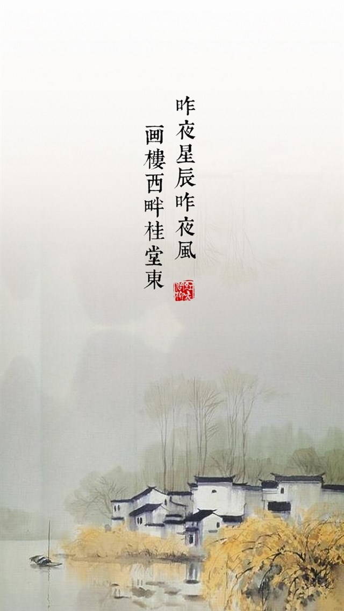
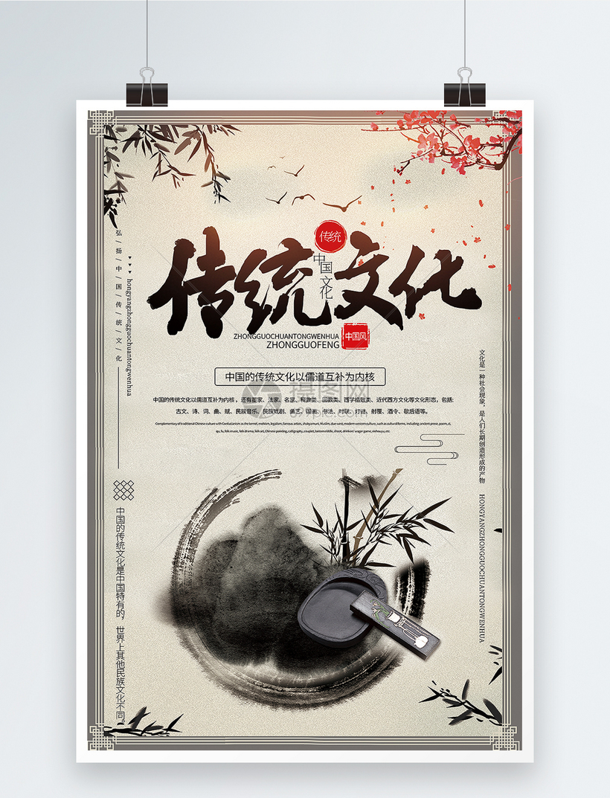
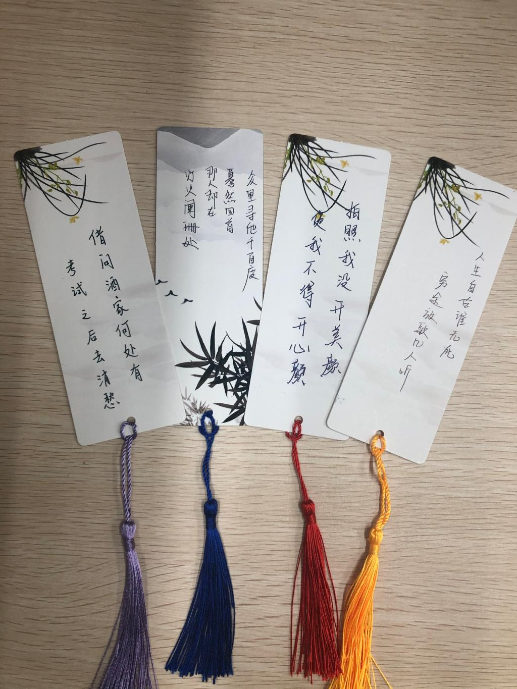

赋

有韵文体
铺采摛文，体物写志
赋
赋是我国古代的一种文体，它讲究文采、韵律，兼具诗歌和散文的性质。其特点是“铺采摛文，体物写志”，
侧重于写景，借景抒情。赋的发展经历了几个阶段：最早出现于诸子散文中，叫“短赋”；以屈原为代表的
“骚体”是诗向赋的过渡，叫“骚赋”；汉代正式确立了赋的体例，称为“辞赋”；魏晋以后，日益向骈对方向发展，
叫做“骈赋”；唐代又由骈体转入律体叫“律赋”；宋代以散文形式写赋，称为“文赋”。。
赋的来源
“赋”字用为文体的第一人应推司马迁。在汉文帝时“诗”已设立博士，成为经学。在这种背景下，称屈原的作品
为诗是极不合适的。但屈原的作品又往往只可诵读而不能歌唱，若用“歌”称也名不正言不顺。于是，司马迁就
选择“辞”与“赋”这两个名称。不过，他还是倾向于把屈原的作品以“辞”来命名，这是由于屈原的作品富于文采之故。
而把宋玉、唐勒、景差等人作品称为“赋”。真 正把自己作品称为赋的作家第一人是司马相如。而后，到西汉末年，
文人们就常以“赋”名篇自己的作品了。 “赋”的名称最早见于战国后期荀况的《赋篇》。最初的诗词曲都能歌唱
，而赋却不能歌唱，只能朗诵。它外形似散文，内部又有诗的韵律，是一种介于诗歌和散文之间的文体。

洛神赋
作者：曹植
洛神赋(节选)
余告之曰：其形也，翩若惊鸿，婉若游龙。荣曜秋菊，华茂春松。髣髴兮若轻云之蔽月，飘飖兮若流风之回雪。
远而望之，皎若太阳升朝霞；迫而察之，灼若芙蕖出渌波。秾纤得衷，修短合度。肩若削成，腰如约素。延颈秀项，皓质呈露。
芳泽无加，铅华弗御。云髻峨峨，修眉联娟。丹唇外朗，皓齿内鲜。明眸善睐，靥辅承权。瓌姿艳逸，仪静体闲。柔情绰态，媚于语言。
奇服旷世，骨像应图。披罗衣之璀粲兮，珥瑶碧之华琚。戴金翠之首饰，缀明珠以耀躯。践远游之文履，曳雾绡之轻裾。微幽兰之芳蔼兮，
步踟蹰于山隅。于是忽焉纵体，以遨以嬉。左倚采旄，右荫桂旗。攘皓腕于神浒兮，采湍濑之玄芝。
余情悦其淑美兮，心振荡而不怡。无良媒以接欢兮，托微波而通辞。愿诚素之先达兮，解玉佩以要之。嗟佳人之信修兮，
羌习礼而明诗。抗琼珶以和予兮，指潜渊而为期。执眷眷之款实兮，惧斯灵之我欺。感交甫之弃言兮，怅犹豫而狐疑。收和颜而静志兮，
申礼防以自持。
于是洛灵感焉，徙倚彷徨。神光离合，乍阴乍阳。竦轻躯以鹤立，若将飞而未翔。践椒涂之郁烈，步蘅薄而流芳。超长吟以永慕兮，
声哀厉而弥长。尔乃众灵杂沓，命俦啸侣。或戏清流，或翔神渚，或采明珠，或拾翠羽。从南湘之二妃，携汉滨之游女。叹匏瓜之无匹兮，
咏牵牛之独处。扬轻袿之猗靡兮，翳修袖以延伫。体迅飞凫，飘忽若神。凌波微步，罗袜生尘。动无常则，若危若安；进止难期，若往若还。
转眄流精，光润玉颜。含辞未吐，气若幽兰。华容婀娜，令我忘餐。

阿房宫赋
作者：杜牧
阿房宫赋
六王毕，四海一，蜀山兀，阿房出。覆压三百余里，隔离天日。骊山北构而西折，直走咸阳。二川溶溶，流入宫墙。
五步一楼，十步一阁；廊腰缦回，檐牙高啄；各抱地势，钩心斗角。盘盘焉，囷囷焉，蜂房水涡，矗不知其几千万落。
长桥卧波，未云何龙？复道行空，不霁何虹？高低冥迷，不知西东。歌台暖响，春光融融；舞殿冷袖，风雨凄凄。
一日之内，一宫之间，而气候不齐。
妃嫔媵嫱，王子皇孙，辞楼下殿，辇来于秦。朝歌夜弦，为秦宫人。明星荧荧，开妆镜也；绿云扰扰，梳晓鬟也；
有不见者三十六年。燕赵之收藏，韩魏之经营，齐楚之精英，几世几年，剽掠其人，倚叠如山。一旦不能有，输来其间。
鼎铛玉石，金块珠砾，弃掷逦迤，秦人视之，亦不甚惜。
嗟乎！一人之心，千万人之心也。秦爱纷奢，人亦念其家。奈何取之尽锱铢，用之如泥沙？使负栋之柱，多于南亩之农夫；
架梁之椽，多于机上之工女；钉头磷磷，多于在庾之粟粒；瓦缝参差，多于周身之帛缕；直栏横槛，多于九土之城郭；
管弦呕哑，多于市人之言语。使天下之人，不敢言而敢怒。独夫之心，日益骄固。戍卒叫，函谷举，楚人一炬，可怜焦土！
呜呼！灭六国者六国也，非秦也；族秦者秦也，非天下也。嗟乎！使六国各爱其人，则足以拒秦；使秦复爱六国之人,
则递三世可至万世而为君，谁得而族灭也？秦人不暇自哀，而后人哀之；后人哀之而不鉴之，亦使后人而复哀后人也。